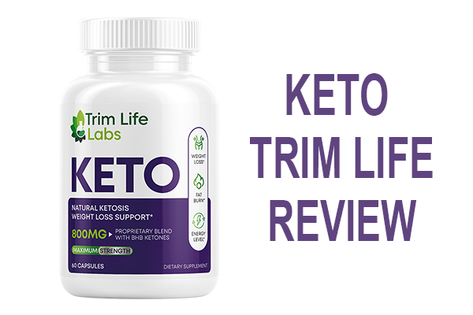
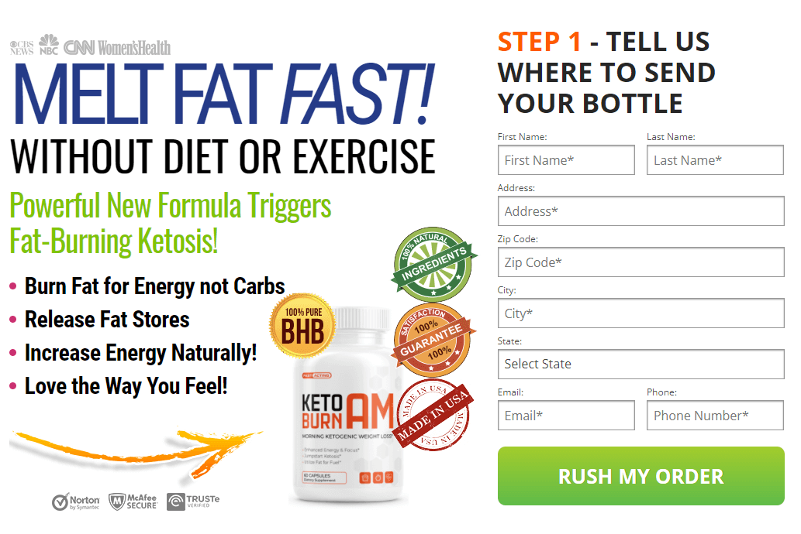
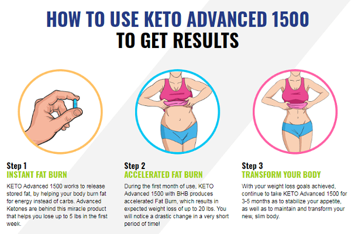

Keto Trim Life Reviews (Updated) - Does It Work Or Scam? In-Depth Review

Keto Trim Life is a popular weight loss pills on the market, and it's because of its proprietary blend of ingredients. Keto Trim Life, with its natural fat-burning ingredients, helps you get into ketosis and thus lose weight faster.
If you're looking for a weight loss solution, this Keto Trim Life review can be the answer you've been searching for. Thousands of adults have used this product without experiencing any negative side effects. In a one-year study with more than a thousand participants, Keto Trim Life has helped its users lose weight and lower their BMI. Pound-for-pound, it is one of the most powerful weight loss products in the world.
In this Keto Trim Life review, we will know how this natural supplement is helping people achieve weight loss goals and desired BMI. You will know what stores carry Keto Trim Life. Does it have negative side effects, or does Keto Trim Life really work? Is Keto Trim Life any good? If so, who sells Keto Trim Life, after all? Visit The Official Website Of Keto Trim Life To Learn More >>
What is Keto Trim Life?
First of all, this keto formula is a weight loss supplement. Who owns Keto Trim Life, and who makes Keto Trim Life? This Keto supplement is made in the United States and is sold by a UK-based company. It is the best Keto Trim Life drink and formula out there.
The Keto Trim Life weight loss pill is a powerful new formula that can help you find your ideal weight and live a healthier life. This supplement uses pure exogenous ketones combined with full-spectrum BHB salts to give you a fat-burning boost and helps to kick start the body's ability to enter into a state of ketosis. This helps the body to burn its own fat stores much more easily, leading to fast and natural weight loss for users as they lose excess body fat.
Does Keto Trim Life pills really work? Let's get to know about the ingredients first.
Keto Trim Life Does It Work?
Is Keto Trim Life right for you? Does Keto Trim Life work? First of all, it is one of the most effective weight loss products out there. The Keto Trim Life Better Business Bureau profile is good, and also the Keto Trim Life BBB reputation is positive. If you are not happy with your weight loss results, it may be because you have less fat to lose. If this is the case, you should continue taking the supplement for a few more weeks or try a similar product to lose more weight.
The best way to see results from Keto Trim Life is to put in some effort of your own while taking it. The ability to lose weight depends on the supplement and how much you do yourself, so remember that the two factors are interlinked. Keto Trim Life is no magic pill. But if you put in some effort while taking it, it can certainly help you lose weight. You will see results if you.
- Drink Plenty of Water: It is essential to stay hydrated and drink plenty of water. Similarly, make sure to get plenty of sleep.
- Avoid Alcohol: It is best to avoid alcohol consumption. Alcohol hinders the process of ketosis. Thus, try to avoid drinking alcohol as much as possible. Rather than drinking alcohol, think about taking Keto Trim Life with apple cider vinegar. However, when consuming the pill, take it only with plain water. Speaking of which, read the Keto Trim Life directions for use in the upcoming section of the Keto Trim Life pills reviews.
So, does Keto Trim Life really work? There are many advantages to using Keto Trim Life. It can take off 7Ibs as long as you use it regularly for 2-6 months, and there are many other benefits of these supplements. This product is hitting the spotlight recently, and hence we are not surprised to see Keto Trim Life Mayo Clinic updates soon enough.
Last but not the least, you should know when to take Keto Trim Life Max and how to take Keto Trim Life. Speaking of which, we have explained how to take Keto Trim Life in the upcoming sections.
Keto Trim Life Ingredients
Is advanced keto safe? You must know about the ingredients to understand the safety of a product. Hence, in this Keto Trim Life review, we share the list of ingredients-
- Beta-Hydroxybutyrate (BHB): It is an exogenous ketone body. It comes from outside the body. It directs your body to stop using glucose as fuel and to use these ketone bodies instead. Hence, the Keto Trim Life BHB can help fuel your brain.
- Magnesium BHB: Magnesium BHB has been shown to accelerate weight loss. Consuming this form of BHBs can support your metabolism and fuel your body. If you want to lose even more weight, Magnesium BHB can help you do that. Magnesium BHB further supports your metabolism and fuels your body.
- Calcium BHB: Calcium BHB is a more potent form of BHB that may boost the effectiveness of regular BHB. This popular ketone body support exercise and mental performance during the keto-adaptation period.
- Sodium BHB (36mg): You must be wondering: Is the Keto Trim Life weight loss safe? Keto Trim Life is formulated with 36 mg of Sodium BHB as one of the ingredients. Sodium BHB may help replenish lost electrolytes that are lost during ketosis and help maintain energy levels. It may also be helpful for those on a calorie-restricted diet.
- Green tea (leaf) Extract: Studies show that consuming green tea extract can result in fat loss. Studies also show that being in ketosis can improve cognition and brain function. Green tea, when paired with a ketogenic diet, improves cognition as well helps with weight loss.
- Apple Cider Vinegar: The benefits of staying on the keto diet and apple cider vinegar are pretty much known to everyone following the keto diet. Does apple cider vinegar help with ketosis? Here's what you get to know about Keto Trim Life and apple cider vinegar. It is one of the best keto supplements that's because it is formulated with ACV. That means you can reap all the health benefits of Apple cider vinegar.
Benefits of Keto Trim Life
It's not enough to simply eat healthy food. We need multiple micronutrients in order to ensure our bodies stay healthy. Keto Trim Life consists of the special nutrients that help the weight loss process take place within the body. This process leads to positive results for our bodies. So, what does Advanced Keto Trim Life do? Below are some of the benefits we should expect to receive when we use Keto Trim Life:
- Helps Burns The Excess Fat:
Many have been wondering: what does Keto Trim Life do? Keto Trim Life can help you burn off your excess body fats. It can take care of the risks that come with unhealthy weight gain and fat deposits, which have been linked to chronic illnesses in most studies.
- Helps in Building Lean Mass:
The combination of proper diet and exercise, along with the use of Keto Trim Life, can help improve your body composition and overall health. It can also prevent joint problems, skin diseases, and other similar issues.
- Helps in the Digestion Process:
Some of the reviews on Keto Trim Life suggest it helps in the digestion process. If you are suffering from indigestion, you can improve it with the help of this keto supplement.
- Helps in Faster Weight Loss:
You can Lose Weight with Keto Trim Life and reduce up to 5lbs per week. It is one of the most effective keto weight loss products used by many overweight and obese individuals. Keto supplements accelerate the process of ketosis by helping your body remove more water weight and fat weight. One reason people take this supplement is that they help reduce excess water content and fat, leading to weight loss.
- Improves Immune System and Metabolism:
This supplement can also boost your metabolism to facilitate rapid weight loss. Studies have shown that increasing your metabolic rate (through, say, exercise) can help with weight loss and belly fat loss. Keto Trim Life has been shown to increase metabolic rate. It also helps you burn calories and carbs for energy.
- Balances Natural Cortisol Levels:
Keto Trim Life contains strong, active ingredients and antioxidants that help control and stabilize the cortisol level to reduce the risk of high tension and stress that are linked to other chronic illnesses.
- Reduce Fatigue and Stress:
The keto diet makes it difficult to use carbs for energy. This can lead to oxidative stress, which is why those on the keto diet are likely to experience fatigue and stress. But when you take Keto Trim Life, you can offset the chances of experiencing Keto flu.
- Boost Neurological Function:
Another benefit of Keto Trim Life is that it may improve mental focus and brain health. Keto Trim Life might lead to better brain functioning and the risk of dehydration and mineral imbalance in the body it helps prevent. It also delivers electrolytes to the brain, which underlies effective brain functioning.
- Advanced Keto Trim Life and Diabetes:
Keto Trim Life helps regulate blood sugar levels and reduce high blood pressure. This is one of the best pieces of news regarding Keto Trim Life and diabetes.
- Keto Trim Life High Blood Pressure:
Research has determined that Keto Trim Life improves arteries function by widening blood vessels. This, in turn, helps to reduce the pressure exerted on the walls of blood vessels. Additionally, it helps increase insulin sensitivity and improves overall health by reducing blood sugar and increasing good cholesterol levels for better health.
There are several other health benefits of the Keto Trim Life supplement besides weight loss. Keto Trim Life will help you lose weight and reduce your sugar cravings. It will also help you build muscle, regulate blood pressure, reduce symptoms of keto flu, balanced cortisol, and fight fatigue.
So, when to take Keto Trim Life weight loss pills? The short answer is you should take when you want to enjoy the above benefits. Last but not the least, Keto Trim Life formula helps enhance the immune system. It is an all-natural product that has no side effects.
Keto Trim Life Pros and Cons
There are various types of Keto supplements and products out there. Some keto supplements enhance the effects of the keto diet. Some others help your body get back into the ketosis stage. So, there are many options that can be as overwhelming as possible. That's why we compared Keto Trim Life with the top 3 keto supplements. For example:
- Keto Trim Life Vs. Keto Max 800
- Keto Trim Life Vs. One-Shot Keto
- Keto Trim Life Vs. Keto GT
As with other keto supplements, Keto Trim Life has both positive sides and drawbacks. Here are the pros and cons of Keto Trim Life.
Pros:
- Most comprehensive keto formula
- Formulated with plant-based ingredients
- Top-quality ingredients
- Keto Trim Life stores essential nutrients
- Best-tasting
- Allergic safety
- Does not leave stretched skin
- Helps to achieve ketosis fast
- Fast results in as little as 1-2 weeks
- Reasonable price
- 90 day money-back guarantee
Cons:
- Not suitable for people under 18
- Not recommended for those suffering from chronic illness
Advanced Keto Trim Life How Does It Work

Do advanced keto pills work? You must first know how does Keto Trim Life work.
Features: Its blend of ingredients helps kick-start your liver, allowing it to burn fat into ketone bodies. The formula helps increase your energy, boost cognition & performance and give you the ultimate control over your weight. Keto Trim Life forces your body to enter into a fat-burning state called ketosis. Using the Keto Trim Life's blend of ingredients, your body is fed with a natural compound called a ketone body. These ketone bodies are then burned from fat. Thus, Keto Trim Life helps your body enter into the process of Ketosis. But, do you know what ketosis is?
It is a metabolic state. In this stage, your body does not use glucose as its primary fuel source but uses ketone bodies instead. When in this metabolic state, glucose is easily broken down. Glucose is easily converted into energy to fuel your body.
When your body is starved of carbohydrates, it enters a metabolic state known as ketosis. Ketosis takes the fat you've been storing and converts it into these substances called ketones.
The more time you spend in ketosis, the more fat you'll burn, and it won't take as long. Keto Trim Life takes advantage of your body's natural tendency to burn fat more rapidly when you're in ketosis. By helping you to maintain a deep level of ketosis, this product can significantly increase your weight loss.
So, how does Keto Trim Life work? The short answer is that it utilizes the sciences of ketosis. It took several months for the scientists of Keto Trim Life to develop this formula. They tested hundreds of different formulations before finding the best one. Keto Trim Life is that formula, and it consists of five ingredients that are described in the next section.
Keto Trim Life Is It Safe?
In this section, we will learn about the Keto Trim Life side effects. After researching the perfect combination and dosage of ingredients for boosting ketosis, the manufacturer formulated Keto Trim Life. It is designed by a company that specializes in manufacturing weight loss supplements. It is all-natural, and of now, there is no report on any side effects.
Keto Trim Life Effets Secondaires: Some side effects may happen at the beginning of your keto diet. We searched for Keto Trim Life negative reviews, and here's the gist. You may experience certain side effects in the first few days on a keto supplement. They are usually temporary and common to most people who start the diet. It is known as the "Keto flu" These symptoms include fatigue, dizziness, fogginess, and headaches. The good news is that these symptoms.
The side effects of keto dieting are largely a result of the common side effects of keto diets and not necessarily a result of Keto Trim Life. If you are taking any prescribed medications, you can avoid the Keto Trim Life drug interactions by consulting with a health care provider. Make sure to follow the Keto Trim Life mode d'emploi. But not least, make sure to take it according to the Keto Trim Life dosage instructions.
=>(HUGE SAVINGS TODAY) Click Here to Order Keto Trim Life Supplement For The Lowest Price Right Now!
How Long Till You See Results After Taking Keto Trim Life
You must be wondering: how long does it take to see results with Keto Trim Life? Most people notice results after the first few weeks of use, but this entirely depends on you. My weight loss has been consistent since I started taking Keto Trim Life. However, I've only seen results when I follow my recommended diet and lifestyle.
They say it's important to take it for at least a couple of months to maximize the effects. They claim that after about a month, you'll be in a deeper state of ketosis and see more weight loss.
In the space of 2 months, you'll be able to lose a few pounds a day, but it's not uncommon to lose 3-4 pounds a week. If you put in the work and stay consistent, you could lose three or four pounds per week. That means, at two months, you should be on a downward slope. It is entirely possible to lose 3-4 lbs of fat per week. Once you have lost 30 percent of your weight, the manufacturer recommends consuming an additional one to two bottles and continuing as usual.
Keto Trim Life has been clinically proven to effectively promote weight loss in overweight and obese adults. In a clinical study, 93 overweight or obese adults who took Keto Trim Life for four weeks lost an average of 15 pounds.
Keto Trim Life How To Use?
Keto Trim Life not working? In this section, you will learn about Keto Trim Life how to take.
One approach to taking Keto Trim Life pills is to take two capsules with a big glass of water. Start by taking your capsules an hour before one of your main meals. To lose weight at a normal pace, you can take Keto Trim Life 800mg per day. To lose weight much faster, you can take 2 doses of Keto Trim Life by morning and night. Can you take Keto Trim Life on a ketogenic diet? The short answer is- it is not a good idea to do that. That's because this supplement induces your body into a ketogenic state. That means you don't have to be on a keto diet when you are taking this supplement.
Keto Trim Life is it a Scam
Now it is only natural to wonder, is Keto Trim Life a scam? Does Advanced Keto really work? Is Keto Trim Life legit? After all, the Keto Trim Life before and after pictures might seem too compelling. But wait for it.
In my review of Keto Trim Life, I want to summarize & share my findings after using the product for 2 months. Keto Trim Life is supposed to help you lose weight while eating a keto diet. Does Advanced Keto work? I've read a lot of Keto Trim Life reviews, and I've come to the conclusion that it's a good product. The ingredients in this supplement can help you lose weight on a ketogenic diet.
Strangely enough, some Keto Trim Life consumer reviews even say that (instead of the product decreasing their appetite) it increases it. But the truth is, But in reality, some people may be experiencing a weight gain on keto pills as a result of eating more carbs than they can handle while increasing salt-like medium-chain triglycerides.
Although these pills are being sold as a weight loss aid, they may only work for those who are already in ketosis. But the good news is, Keto Trim Life helps your body enter the process of ketosis. Consider reading the Keto Trim Life real reviews to get more ideas. Keto Trim Life Shark Tank reviews also vouch for Keto Trim Life Dr Oz. But was Keto Trim Life on Shark Tank?
Keto Trim Life and Shark Tank
Was Keto Trim Life on Shark Tank? There are many people who claim to have experienced the benefits of Keto Trim Life. The pills contain exogenous ketones.
However, as of the date of this article, Keto Trim Life supplement has not been featured on Shark Tank. According to the producers of Keto Trim Life, the Shark Tank show may one day feature this diet pill. While we wait for the Keto Trim Life shark tank episode, let's see what others are saying about their experience with Keto Trim Life Jean Coutu.
Keto Trim Life Customer Reviews
Does Keto Trim Life actually work? We searched about this product in different places online. For example, Keto Trim Life Reddit forum and also read near about 270+ Keto Trim Life testimonials. Here we share the Keto Trim Life reviews and complaints so that you can have a better idea.
- "I have been taking Keto Trim Life for a couple of months now, and the results have been amazing! I lost 27 pounds in 1 month! I started to feel the effects of the Keto Trim Life on the second day of taking it. I was so happy that I had found something that actually works! And that's not only the best part, but the weight I lost is fat, not muscle." Miranda. C, Keto Trim Life Las Vegas Nevada.
- "I have been taking Keto Trim Life for about 2 months now. I love this product so much; I feel it has given me my life back. And the price is amazing, I just can't believe it's working so well, and I am getting it at such a reasonable price. Now I am able to eat out with my friends and family and not worry about how my blood sugar will react to all the delicious food that's being served." Chris. L, From Keto Trim Life Avis.
- "I am always in a struggle with my weight, but the Keto Trim Life weight loss pills are very helpful to me. With this product, I can control my appetite and got the body I want. I have been using it for five weeks and have lost 16 pounds. I can't wait to see how I look in the coming weeks! Thank you very much!" Brittney. T, Keto Trim Life Las Vegas Nv.
If you are outside of the USA, you can read reviews of Keto Trim Life en francais from the website. The Keto Trim Life Francais consumers also share positive experiences.
Keto Trim Life Where to Buy
Is Keto Trim Life available in stores? Where to buy Keto Trim Life from? So, in this section of the review, we will get to know what stares sell Keto Trim Life, where to buy Keto Trim Life, and where to purchase Keto Trim Life.
Keto Trim Life GNC: It is not a GNC product, and hence you cannot get it from there, and the same goes true for Keto Trim Life Walmart, Keto Trim Life shoppers drug mart, and Keto Trim Life Target. You may search for reviews regarding Keto Trim Life on Amazon. But sometimes, the stock runs out due to high demand. So, where to get Keto Trim Life in the USA? The short answer is you can place your Keto Trim Life order right from the Keto Trim Life official website.
Is Keto Trim Life sold in stores? You can definitely get Keto Trim Life in stores online, but that is from their official website. The best thing is they run Keto Trim Life for sale at various discounts from time to time.
Keto Trim Life where to buy in US: Many have been wondering: Is Keto Trim Life available in US? Fortunately, yes. You can get this ketos fat burner in US from the Keto Trim Life website. It is best to make your Keto Trim Life purchase from the website because they offer a full money-back guarantee. The Keto Trim Life cancel order feature also makes it easy to cancel the order. The good news is they are also offering Keto Trim Life free trial offers on their official website, which brings us to the next question: how much is Keto Trim Life?
Keto Trim Life Price
So, how much does Keto Trim Life cost? How much does it cost in the case of Keto Trim Life Quebec? You can reduce the Keto Trim Life cost by purchasing more than 1 bottle. Here is the list of the Keto Trim Life price for the USA-
If you decide to lose more than 25 pounds, we recommend the 6-bottle package, which comes with free 3 extra bottles. The average price of this most popular pack is $39.97 per Keto Trim Life bottle.
If you need to lose more than 15 pounds, you can increase the doses of Keto Trim Life as your needs require. The bundle pack consists of 4 bottles, but you'll get 2 extra bottles for free. The bundle costs $46.25 per bottle.
Where can you buy Keto Trim Life? Does Walmart sell Keto Trim Life? It is always best to purchase it from the manufacturer's website. The Keto Trim Life Australia price and the Keto Trim Life US price is almost the same as the website.
The Keto Trim Life return policy is very transparent. If you are not satisfied with your Keto Trim Life results, you can return the bottles and get your full refund. No questions asked!
(HUGE SAVINGS TODAY) Click Here to Order Keto Trim Life Supplement For The Lowest Price Right Now!
Keto Trim Life Reviews - Final Thoughts
Finally, it is no wonder one of the best keto products on the market, and its reputation is second to none. That's why we shared this Keto Trim Life review. Its unique formula helps you burn fat all day long. Keto Trim Life has been proven to be very helpful for a long time and can help you lose weight quickly and safely.
For some people, like those who have a hard time reaching their weight goals, or others who just want an extra push, the Keto Trim Life can be of great help. If this is you, then the product can really help you reach your weight-loss goals.
FAQs About Keto Trim Life Weight Loss Supplement
-
Is Keto Trim Life FDA Approved?
Keto Trim Life label does not claim it is FDA approved. Also, unlike drugs and medicines, they don't require the approval to meet the FDA's satisfaction before they're marketed.
-
Does Keto Trim Life Actually Work?
Many have been wondering: does Keto Trim Life really work? Because of its variety of benefits, many overweight or obese people use the Keto Trim Life diet to get into ketosis and lose weight faster.
-
Does Keto Trim Life have Caffeine?
No. Keto Trim Life is free from caffeine and gluten.
-
Where can I Buy Keto Trim Life?
If you search for Keto Trim Life near me, you may come across tons of options. It may get overwhelming. That's why it is best to get it from the Keto Trim Life website .
-
Can you buy Keto Trim Life in Stores?
Definitely, yes. But that's only from the official website . So the short answer to "what stores sell Keto Trim Life?" is that you can get it from the Keto Trim Life stores online.
-
Can I Buy Keto Trim Life at Walmart?
No. Currently, there is no option for Keto Trim Life Walmart. It is also not a good idea to search for Keto Trim Life eBay or Keto Trim Life Walgreens.
-
Can you Buy Keto Trim Life in US?
Yes, and you can also get Keto Trim Life in Australia, but that is only from the official website . The same is true for Keto Trim Life France and Keto Trim Life Nz.
-
Where to find Keto Trim Life?
By purchasing it from the official website , you get to enjoy the Keto Trim Life guarantee and also get your refund if you are not satisfied with your results. Hence it is better to get Keto Trim Life purchase from the website. The same is true for "where can I buy advanced keto?"
-
How much does Keto Trim Life Cost?
Each single Keto Trim Life bottle costs $40.00. But, you can get Keto Trim Life free trial offer right now from their website.
-
How to take Keto Trim Life?
The pills are easy to swallow, so you don't need to crush them into Keto Trim Life powder. As per the directions for Keto Trim Life, you should take one keto pill three times a day. Please see the "Keto Trim Life how to take" section to learn in detail.
-
How to use Keto Trim Life?
According to the Keto Trim Life instructions, you should take the supplement with water. Remember that Keto Trim Life works fast, so you need to take it 15 to 20 minutes before eating or exercising.
-
How to use Keto Trim Life?
It is better to take according to the official instruction, which is to take 2 pills with water. However, some Keto Trim Life medical reviews suggest you can make Keto Trim Life liquid by mixing it with your favorite smoothies or plain water.
-
How Safe is Keto Trim Life?
We couldn't find any Keto Trim Life complaints. The reviews for Keto Trim Life state that this ketosis booster is safe to take. Make sure to go through the list of ingredients if you have any doubt.
-
How to Return Keto Trim Life?
You can return the Keto Trim Life bottles by sending them back to their address. You can also speak with the Keto Trim Life customer service team by contacting them on the Keto Trim Life customer service number or by sending them a mail at the Keto Trim Life email.
-
How to order Keto Trim Life?
You can easily get it from Keto Trim Life Try Keto-Advanced website. By clicking the Keto Trim Life buy button from the website, you can place your order.
-
When to take Keto Trim Life weight loss 800 mg?
Take Keto Trim Life weight loss 800 mg 15 to 20 minutes before eating or exercise for best results. The same is true for when to take Keto Max 800.
-
Is Keto Trim Life Safe?
The Keto Trim Life safety profile is clean. It is an all-natural keto supplement. However, make sure to follow the Keto Trim Life recommended dosage instruction.
-
Does ACV help Ketosis?
One of the best ingredients in ACV is malic acid, which is a ketone precursor. It helps facilitate the production of ketosis in the body. Therefore, one of the benefits of apple cider vinegar is that it raises the ketone levels in your blood.
-
Does Keto and Apple Cider Vinegar Work?
The keto diet relies on keeping ketone levels as high as possible in order to achieve the metabolic state of ketosis. One way to do this is to consume apple cider vinegar, which contains malic acid, a substance that encourages the production of ketosis.
-
Does Keto Max 800 Work?
Yes, it is a good keto supplement. You can search for Keto Trim Life Reviews Youtube to get a better idea.
-
Keto Trim Life, does it Really Work?
Keto Trim Life is a type of diet pill that claims to be able to force your body into ketosis. Studies have shown that individuals who are in a state of ketosis tend to lose weight rapidly. That is why people who take it see dramatic weight loss and fat burning when they take it.
Keto Trim Life customer support number: TOLL-FREE 855-664-0768.
Disclosure by content creator### This press release is for informational purposes only. The information does not constitute advice or an offer to buy. Any purchase done from this story is done at your own risk. Consult an expert advisor/health professional before any such purchase. Any purchase done from this link is subject to the final terms and conditions of the website that is selling the product. The content on this release does not take any responsibility directly or indirectly.
Affiliate Disclosure:
The links contained in this product review may result in a small commission to HealthyRex if you opt to purchase the product recommended at no additional cost to you. This goes towards supporting our research and editorial team and please know we only recommend high-quality products.


Comments
Tarah Smith
I keep see this everywhere - has anyone tried it yet? Looking for Results? Let me know!
Reply . 13 . Like . 12 minutes ago
Maria Gonzales
Im so serious... I´ve been 1 months using this product and the results are really amazing. Highly recommend. Nice of him to give out these free samples too!
Reply . 14 . Like . 16 minutes ago
Jordan Smith
I'll second that, crazy results to far. figured I had nothing to lose with a trial like this...glad I gave it a shot
Reply . 2 . Like . 1 hour ago
Adisson Lewis
I just claimed my samples. Thanks!
Reply . 13 . Like . 12 minutes ago
Harrison Ferris
I had a girl of mine (medical-practitioner) read through the studies, she was pretty shocked at how legit they were. I signed up for the trial, couldn't believe how fast I started seeing results
Reply . 13 . Like . 12 minutes ago
Anthony Jack
damn! I keep seeing reports about this product. they were initially sold-out when I first tried to get it. finally re-opened it back to the public!
Reply . 13 . Like . 12 minutes ago
Kathrin Daryn
I love the I'm going to give these products a chance to work their magic on me. I've tried everything out there and so far nothing has been good enough to help me.
Reply . 14 . Like . 16 minutes ago
Cathryn Lane
worked for me! I worked just like I thought it would. It was easy enough and I just want others to know when something works.
Reply . 2 . Like . 1 hour ago
Christina Davis
Thanks for the info, just started mine.
Reply . 13 . Like . 12 minutes ago